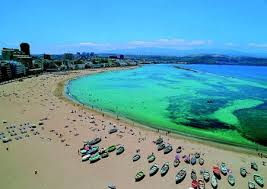

Esta noticia esta relacionada con lo que sucede en las islas Canarias debido al gran flujo de turista durante todo el ano como tenemos el privilegio de gozar de uno de los mejores climas del mundo las persona se acercan a nuestras islas a disfrutar de esta bendicion ES UNICO EN EL MUNDO y nosostros los habitantes estaremos dichosos por que esto genera ingresos y puestos de trabajo
